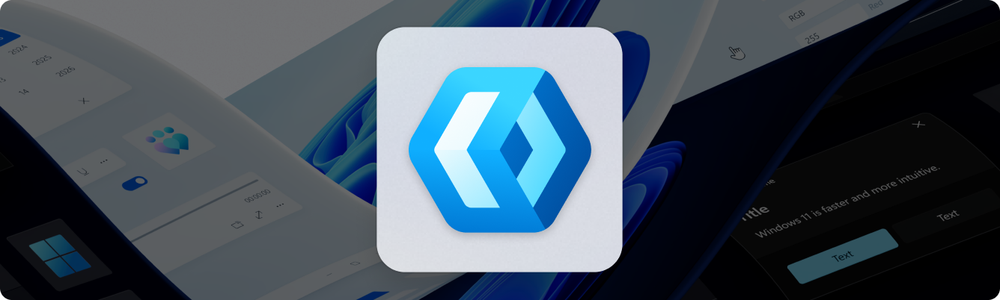

Overview of framework options
This article contains the information you need to get started building apps for Windows.
Windows offers a wide range of languages, frameworks, and tools for building apps, including WinUI, React Native for Desktop, WPF, C++, C#, .NET, and a variety of cross-platform frameworks. Here, we provide information to help you decide which option is best for you.
WinUI

We recommend WinUI and the Windows App SDK to create apps that look great and take advantage of the latest Windows releases. If you're new to Windows development, or starting work on a new Windows app, WinUI provides the resources you need to create great apps for Windows 11.
WinUI is a XAML markup-based user interface layer that contains modern controls and styles for building Windows apps. As the native UI layer for the Windows App SDK, it embodies Fluent Design, giving each Windows app the polished feel that customers expect.
Note
The Windows App SDK is a set of new developer components and tools that represent the latest evolution in the Windows app development platform. The Windows App SDK provides a unified set of APIs and tools that can be used in a consistent way by desktop apps on Windows 11 and downlevel to Windows 10, version 1809.
While WinUI is the native UI layer, you can use the Windows App SDK with WPF, WinForms, or Win32 apps. If you've developed apps for Windows before, but are looking to get started with the Windows App SDK in an existing app, see Framework-specific guides.
React Native for Desktop
React Native is a development platform which allows building cross-platform apps. React Native for Desktop encompasses React Native for Windows and macOS, bringing React Native support to the Windows SDK. React Native for Desktop lets you use JavaScript to build native Windows apps for all devices supported by Windows 10 and Windows 11. This includes PCs, tablets, 2-in-1s, Xbox, Mixed Reality devices, etc.
With React Native for Desktop, you write most or all of your app code in JavaScript - or TypeScript - and the framework produces a native UWP XAML application. If your app needs to call a platform API, you can usually do so through one of the many community modules, or if a module does not yet exist, you can easily write a native module to expose it.
Here are some reasons to choose React Native for Desktop:
- You want to share code across platforms as much as possible, or you have web properties that you want to share code with.
- Improved developer productivity and inner loop, thanks to fast refresh.
- Your app's fundamentals (performance, accessibility, internationalization) are as good as a native UWP app.
- You have experience with and a preference for JavaScript or TypeScript
- You would like to leverage JavaScript-only libraries on npmjs.com, and many native libraries too.
- Your app will use the native controls, visual appearance, animations and colors, and therefore will feel integrated into the design language used in Windows. In addition, React Native for Desktop apps do not have to compromise on the set of APIs they can call, as the framework allows you to call platform APIs as well as write your own view managers and native modules.
- Large and growing community momentum, with lots of community modules.
For more information about React Native for Desktop, see the following links:
- React Native for Windows repo on GitHub
- React Native for macOS repo on GitHub
- API reference
- React Native for Desktop resources
WPF
WPF is a well-established framework for Windows desktop applications with access to .NET or the .NET Framework. Like WinUI, it also uses XAML markup to separate UI from code. WPF provides a comprehensive set of application development features that include controls, data binding, layout, 2D and 3D graphics, animation, styles, templates, documents, media, text, and typography. WPF is part of .NET, so you can build applications that incorporate other elements of the .NET API.
Additionally, you can now integrate a sandbox environment into your packaged WPF applications, providing an additional layer of security. This enhancement requires little to no change to your code, thanks to the new Win32 App Isolation security feature.
Tip
If you've already invested in WPF, you can continue to use it and take advantage of the modernization options in .NET 9. You can build your apps knowing that Microsoft is continuing to invest in WPF. See the Windows developer FAQ for more information.
If you have a WPF .NET app, you also have access to modern Windows platform features and APIs provided by the Windows App SDK. For more information, see Use the Windows App SDK in a WPF app and Modernize your desktop apps.
Tip
If you need more help deciding which framework is the best choice for your app, see the Choose the best application framework for a Windows development project training module.
Other native platform options
Many apps for Windows are written using Win32, Windows Forms, or UWP. Each of these frameworks is supported and will continue to receive bug, reliability, and security fixes, but varying levels of investment for new features and styles. For more information about these app types see the following tabs.
Win32 desktop apps (also sometimes called classic desktop apps) are the original app type for native Windows applications that require direct access to Windows and hardware. This makes Win32 the app type of choice for applications that need the highest level of performance and direct access to system hardware.
Using the Win32 API with C++ makes it possible to achieve the highest levels of performance and efficiency by taking more control of the target platform with un-managed code than is possible on a managed runtime environment like WinRT and .NET. However, exercising such a level of control over your application's execution requires greater care and attention to get right, and trades development productivity for runtime performance.
Here are a few highlights of what the Win32 API and C++ offers to enable you to build high-performance applications.
- Hardware-level optimizations, including tight control over resource allocation, object lifetimes, data layout, alignment, byte packing, and more.
- Access to performance-oriented instruction sets like SSE and AVX through intrinsic functions.
- Efficient, type-safe generic programming by using templates.
- Efficient and safe containers and algorithms.
- DirectX, in particular Direct3D and DirectCompute.
- Use C++/WinRT to create modern desktop Win32 apps with first-class access to Windows Runtime (WinRT) APIs.
Additionally, you can now integrate a sandbox environment into your Win32 applications, providing an additional layer of security. This enhancement requires little to no change to your code, thanks to the new Win32 App Isolation security feature.
You also have access to modern Windows platform features and APIs provided by the Windows App SDK. For more information, see Use the Windows App SDK in an existing project and Modernize your desktop apps.
Other cross-platform options
If you need your app to be cross-platform, in addition to React Native for Desktop, you should consider .NET MAUI, Blazor Hybrid, or a Progressive Web App (PWA). There are many other choices available (here's a list of popular options), but these are some good starting points.
.NET MAUI harnesses the power of WinUI on Windows, while also enabling execution on other operating systems. Blazor Hybrid blends desktop and mobile native client frameworks with .NET and Blazor. Another cross-platform option, Progressive Web Apps (PWAs), are websites that function like installed, native apps on Windows and other supported platforms, while functioning like regular websites on browsers.
For more information, see the following tabs.
.NET Multi-platform App UI (MAUI) is an open-source, cross-platform framework for building Android, iOS, macOS, and Windows applications that leverage the native UI and services of each platform from a single .NET code base. Because .NET MAUI favors platform native experiences, it uses WinUI and the Windows App SDK so apps get the latest user experience on Windows. This gives your apps access to everything you get with WinUI plus the ability to reach to other platforms.
.NET MAUI for Windows is a great choice if:
- You want to share as much .NET code as possible across mobile and desktop applications.
- You want to ship your application beyond Windows to other desktop and mobile targets with native platform experiences.
- You want to use C# and/or XAML for building cross-platform apps.
- You're using Blazor for web development and wish to include all or part of that in a mobile or desktop application.
For more information about .NET MAUI, see the following links:
App development framework feature comparison
There is a wide range of options for developing applications for Windows. The best option for you depends on your application requirements, your existing code, and your familiarity with the technology. The following table lists the most popular app development frameworks available on Windows and the features supported by each framework.
| Feature | .NET MAUI | Blazor Hybrid | React Native for Desktop | UWP XAML (Windows.UI.Xaml) | Win32 (MFC or ATL) | Windows Forms | WinUI 3 | WPF |
|---|---|---|---|---|---|---|---|---|
| Language | C# | C# | JavaScript, TypeScript | C#, C++, Visual Basic | C++, Rust | C#, Visual Basic | C#, C++ | C#, Visual Basic |
| UI language | XAML/Code | Razor | JSX | XAML | Code | Code | XAML | XAML |
| UI designer (drag & drop) |
Not supported | Not supported | Not supported | Supported | Not supported | Supported | Not supported | Supported |
| UI debugging | Hot Reload | Hot Reload | Fast Refresh | Hot Reload | - | Hot Reload | Hot Reload | Hot Reload |
| Fluent Design | Supported | Supported | Supported | Supported (via WinUI 2) | Not supported | Not supported | Supported | Not supported |
| .NET | .NET | .NET | N/A | .NET Core & .NET Native | N/A | .NET & .NET Framework | .NET | .NET & .NET Framework |
| Windows App SDK | Supported (more info) | Supported via MAUI | Supported (more info) | Not supported | Supported | Supported (more info) | Supported | Supported (more info) |
| Great for touch | Supported | Supported | Supported | Supported | Not supported | Not supported | Supported | Not supported |
| Cross-platform | Supported | Supported | Supported | Not supported | Not supported | Not supported | Not supported | Not supported |
| Xbox/HoloLens apps | Not supported | Not supported | Supported | Supported | Not supported | Not supported | Not supported | Not supported |
| Sandboxing (AppContainer) | Not supported | Not supported | Supported | Supported | Not supported | Not supported | Not supported | Not supported |
| Currently supported | Supported | Supported | Supported | Supported | Supported | Supported | Supported | Supported |
| Receiving updates | Supported | Supported | Supported | Supported (security & bugfix) | Supported | Supported | Supported | Supported |
| Roadmap | GitHub | GitHub | GitHub | n/a | n/a | GitHub | GitHub | GitHub |
Learn more about each of these options:
- Windows developer FAQ
- .NET Multi-platform App UI (.NET MAUI)
- ASP.NET Core Blazor Hybrid
- React Native for Desktop
- Universal Windows Platform (UWP)
- Recommendations for Choosing Between ATL and MFC
- Windows Forms
- Windows Presentation Foundation (WPF)
- WinUI in the Windows App SDK (WinUI 3)
Next steps
- Use WinUI to start developing apps for Windows
WinUI is our recommended platform for Windows apps, and these steps will quickly get you started.
- Set up your development environment on Windows
Windows isn't just great for developing apps that run on Windows, it's also a powerful environment for developing apps for any platform. Learn more about the tools and options available to maximize your development.